1/29（五）・移動日
1/29 抵達：關西機場 → 京都出町柳民宿（10 人座接送車）
下飛機後搭預約好的 10 人座接送車直達京都民宿，行李不用自己拖上電車
14:00🚶關西機場入境
- 14:00抵達關西機場（以此為例，實際依航班）
- 14:00入境審查 → 領行李 → 海關（約 40–60 分；先在 Visit Japan Web 填好入境、海關資料）
- 15:00入境大廳和接送車司機會合
更多說明
下飛機後跟著「到着 Arrivals」指標走：入境審查 → 領行李（看轉盤螢幕上的航班號碼）→ 海關。先在 Visit Japan Web 填好資料，入境和海關各出示一次 QR 碼，會快很多。
- 7 個人行李多，出海關前先確認每個人的行李都拿齊了
- 要買 ICOCA 的話，可以在機場站 JR 售票處買；之後坐京阪、地鐵都能刷
15:10🚕10 人座接送車：關西機場 → 出町柳民宿
- 15:1010 人座接送車出發，走阪和道、名神高速，約 1 小時 40 分
🚕 預約 10 人座接送車｜關西機場 → 京都 出町柳民宿｜約100分｜依預約｜IC可更多說明
司機通常在入境大廳拿名牌等候。從關西機場到京都市區約 100 公里，走高速公路約 1 小時 30 分到 1 小時 50 分，週五傍晚京都市區會塞一點。
- 路線
- 預約 10 人座接送車
- 區間
- 關西機場 → 京都 出町柳民宿
- 班次
- 已預約；把民宿的日文地址先傳給接送公司
- 票價
- 依預約
- IC 卡
- 依預約內容付款
- 出發前一天再跟接送公司確認航班與集合點
- 航班延誤時主動通知
16:50📍出町柳民宿入住
- 16:50抵達出町柳民宿，入住、整理行李
更多說明
民宿在京阪「出町柳」站附近，鴨川三角洲走路就到。入住後確認暖氣、熱水怎麼用（1 月底京都早晚常在 0–5 度）。
17:30🍽晚餐：出町柳一帶
- 17:30晚餐：出町柳一帶，順便到超商買隔天早餐
更多說明
出町柳站西側過橋就是出町桝形商店街，有餐廳、熟食和超市；第一天累了也可以買便當回民宿吃。
費用・其他走法・注意事項・來源
建議日期說明
2027-01-29（週五）抵達日。航班時間還沒提供，以下用「14:00 抵達關西機場」舉例，實際請依航班往後推。
推薦走法的交通費（成人單程合計）
| 10 人座機場接送車（關西機場 → 京都） 已預約；7 人＋行李一台坐得下 | 依預約 |
| 合計 | 依預約 |
其他走法
- 接送車沒訂到：可以搭 JR 特急はるか到京都站（約 75 分），再叫 2 台計程車到出町柳（約 20 分）；7 人帶大行李轉車比較累
要留意
- 航班時間確定後，請告訴我，我再把時間軸改成實際時間
1/30（六）・京都
1/30 太秦映畫村＋天山之湯溫泉（全日 2 台計程車）
上午到下午玩映畫村的古裝街景與表演，傍晚泡溫泉暖身，再搭計程車回民宿
09:25🚕出町柳 → 太秦映畫村（計程車）
- 09:20民宿請櫃台叫 2 台計程車（或用叫車 App）
- 09:25計程車 出町柳 → 太秦映畫村（約 30 分）
🚕 計程車｜出町柳 → 太秦映畫村｜約30分｜每台約 3,000–3,500 円｜IC可更多說明
從出町柳往西南到太秦約 7 公里，走今出川通、西大路通，約 25–35 分。跟司機說「太秦映画村」（うずまさえいがむら；2026 年改名前叫東映太秦映画村）就知道。
- 路線
- 計程車（2 台）
- 區間
- 出町柳 → 太秦映畫村
- 班次
- 不用預約；人多時可用 GO、Uber 等叫車 App 一次叫 2 台
- 票價
- 每台約 3,000–3,500 円（估算）
- IC 卡
- 多數計程車可刷信用卡、交通 IC 卡，上車前可先問
- 飯店／民宿可以請櫃台幫忙叫車
- 把目的地的日文名稱或地址給司機看最保險
10:00📍太秦映畫村
- 10:00太秦映畫村（10:00 開村；付費設施 17:30 停止受理）
- 12:00在園內吃午餐
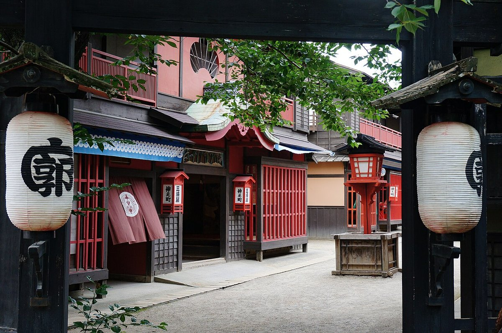
吉原通的燈籠與江戶街景663highland, CC BY-SA 4.0, https://commons.wikimedia.org/wiki/File:130706_Toei_Kyoto_Studio_Park_Kyoto_Japan01s3.jpg 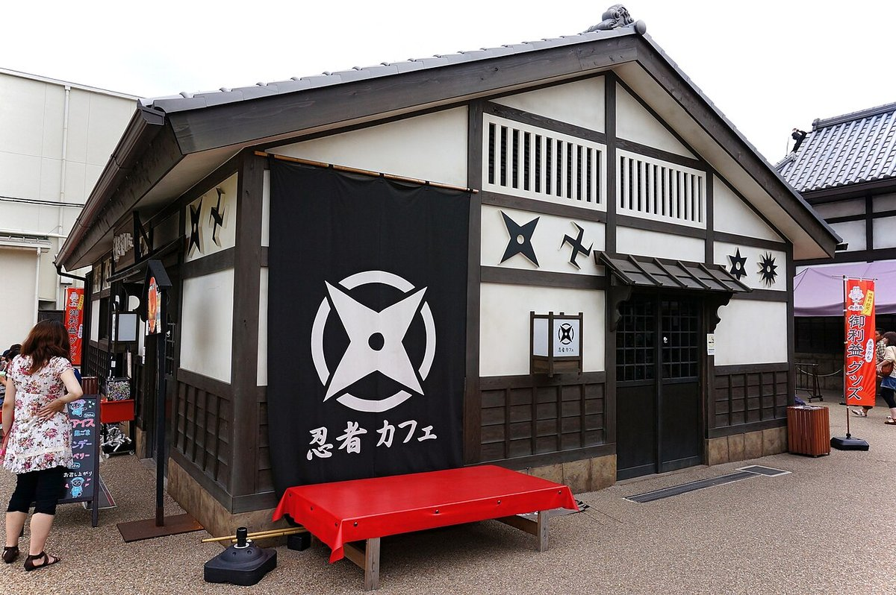
忍者咖啡館663highland, CC BY-SA 4.0, https://commons.wikimedia.org/wiki/File:130706_Toei_Kyoto_Studio_Park_Kyoto_Japan06n.jpg 更多說明
日本唯一能參觀時代劇拍攝現場的主題樂園，就在東映京都攝影所旁邊。園內重現江戶時代的街道、吉原花街、商家和長屋，電影、電視劇常在這裡實景拍攝。2026 年 3 月改名「太秦映画村」並分期改裝，營業時間延長到晚上 21:00。有忍者秀、忍者機關屋、立體迷宮、手裏劍道場和扮裝體驗，大人小孩都玩得到。
- 江戶街景開放式佈景：日本橋、吉原通、商家、長屋，運氣好能看到實際拍攝
- 忍者秀（室內、免費）、手裏劍道場（橡膠手裏劍 400 円），還能租小朋友穿的忍者服
- 付費設施：からくり忍者屋敷、NINJA BATTLE、立體迷宮「忍者の砦」、鬼屋，買アトラクションパス 1,500 円可整天無限次玩
- 假面騎士、超級戰隊歷史展和「東映英雄市」商店（在パディオス館內，適合小小孩）
- 冬季（12–2 月）每週二休村，遇國定假日照開；2027/1/18（一）–1/26（二）連休 9 天。3、4、11 月週二也有開。
- 付費設施 17:30 停止受理，想玩忍者屋敷、迷宮要中午前到；未滿 3 歲、或學齡前兒童沒有 16 歲以上大人陪同，都不能玩付費設施。
- 帶長輩、幼兒：案內處免費借輪椅和嬰兒車（18 kg 以下，不能預約），有授乳室、調乳熱水和尿布販賣機，村內有 7 處無障礙廁所；部分路面是碎石路。
- 原則上不能帶外食，但小朋友的點心、餐食和飲料可以；出村後不能再入場。正門附近有投幣置物櫃（M 400 円），大型行李箱放不下。
- 冬天戶外佈景區風大偏冷，要穿暖；戶外表演下雨時可能換地點或取消。
15:00🚕映畫村 → 天山之湯（計程車）
- 15:00計程車 映畫村 → 天山之湯（5–10 分）
🚕 計程車｜太秦映畫村 → 天山之湯｜約8分｜每台約 1,000 円｜IC可更多說明
在映畫村門口叫車或請工作人員幫忙叫車，跟司機說「さがの温泉 天山の湯」，約 2 公里、5–10 分。
- 路線
- 計程車（2 台）
- 區間
- 太秦映畫村 → 天山之湯
- 班次
- 不用預約；人多時可用 GO、Uber 等叫車 App 一次叫 2 台
- 票價
- 每台約 1,000 円（估算）
- IC 卡
- 多數計程車可刷信用卡、交通 IC 卡，上車前可先問
- 飯店／民宿可以請櫃台幫忙叫車
- 把目的地的日文名稱或地址給司機看最保險
15:15📍嵯峨野溫泉 天山之湯（さがの温泉 天山の湯）
- 15:15天山之湯：泡湯、休息，館內餐廳吃晚餐
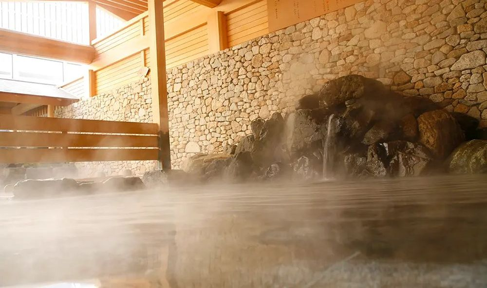
冒著熱氣的「銀閣之湯」官網：さがの温泉 天山の湯 https://ndg.jp/tenzan/floor/ 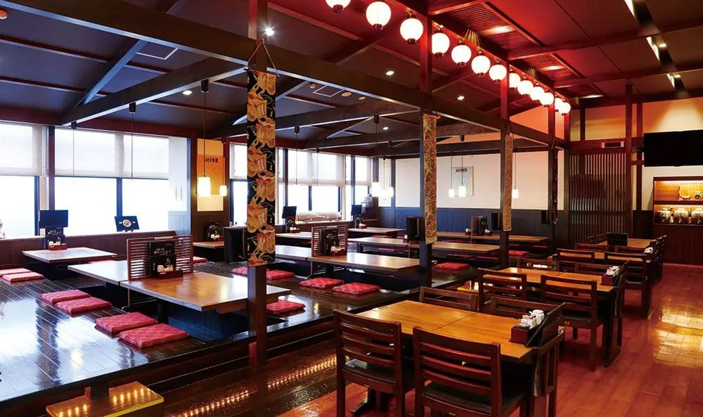
館內餐廳「京都だいにんぐ」官網：さがの温泉 天山の湯 https://ndg.jp/tenzan/floor/ 更多說明
嵐電有栖川站旁的大型日歸溫泉，引用嵯峨野地下約 1,200 m 湧出的天然溫泉（鈉・鈣－氯化物泉）。露天區有含鐵、呈褐色的源泉「金閣之湯」、透明的「銀閣之湯」、美濃燒大壺湯和寢湯。館內有餐廳、遊戲區和休息室，營業到深夜 12 點，離太秦映畫村約 2 km，搭計程車很近。
- 露天風呂：金閣之湯（源泉、褐色鐵泉）、銀閣之湯（週六日和假日改成高濃度碳酸泉）、美濃燒壺湯、寢湯
- 室內：大浴池、按摩池、電氣浴；男湯有塔式桑拿，女湯有鹽桑拿和乾式桑拿，13:00 起每逢奇數整點有熱風服務（Aufguss）
- 泡完可在「京都だいにんぐ」吃日式、西式餐點，館內還有遊戲區、漫畫休息區和懶骨頭躺椅區，全家可以待上半天
- 免費停車場約 150 台（限館內消費期間）
- 2027 年 1–2 月公休日：1/18（一）、2/15（一）（每月第 3 個週一）。
- 京都市條例規定 7 歲以上兒童不能進異性浴場；還沒戒尿布的嬰兒只能用嬰兒浴盆，男女湯分開前先分好誰帶小孩。小學以下要有家長陪同，未滿 18 歲要在 22:00 前離館。
- 有刺青（連紋身貼紙也算）一律不能入館；不能帶外食進館。洗髮精、沐浴乳、吹風機免費，毛巾自備或租（250 円）。
- 從太秦映畫村搭計程車約 2 km、5–10 分（車資約 1,000 円上下，待確認）；7 人要分兩台，或事先叫 9 人座的大型計程車。週末傍晚比較多人。
- 60 歲以上辦會員（入會費 200 円）可在每週二、五 17:00 前入館享「シルバーDay」優惠（國定假日除外）；在館內期間可以重複泡、出館再進要重新買票。
18:30🚕天山之湯 → 出町柳民宿（計程車）
- 18:30計程車 天山之湯 → 出町柳民宿（約 30 分）
🚕 計程車｜天山之湯 → 出町柳｜約30分｜每台約 4,000–4,500 円｜IC可更多說明
泡完湯在櫃台請店家叫 2 台計程車，冬天傍晚外面冷，在館內等車。約 10 公里、30 分。
- 路線
- 計程車（2 台）
- 區間
- 天山之湯 → 出町柳
- 班次
- 不用預約；人多時可用 GO、Uber 等叫車 App 一次叫 2 台
- 票價
- 每台約 4,000–4,500 円（估算）
- IC 卡
- 多數計程車可刷信用卡、交通 IC 卡，上車前可先問
- 飯店／民宿可以請櫃台幫忙叫車
- 把目的地的日文名稱或地址給司機看最保險
費用・其他走法・注意事項・來源
建議日期說明
2027-01-30（週六）：映畫村冬季週二休、1/18–1/26 連休，1/30 有開；天山之湯每月第 3 個週一公休，1/30 有開。週六人較多，建議一開門就到。
推薦走法的交通費（成人單程合計）
| 計程車 出町柳 → 映畫村（每台） 約 7 公里；2 台 | 約 3,000–3,500 円 |
| 計程車 映畫村 → 天山之湯（每台） 約 2 公里 | 約 1,000 円 |
| 計程車 天山之湯 → 出町柳（每台） 約 10 公里 | 約 4,000–4,500 円 |
| 合計 | 約 8,000–9,000 円／台 |
其他走法
- 省計程車費：映畫村、天山之湯都在嵐電沿線（太秦廣隆寺站、有栖川站），可以坐嵐電到四條大宮再轉巴士，但帶長輩和小孩換車多，冬天傍晚建議還是坐計程車
- 映畫村開到 21:00：想多玩可以晚點再去泡湯（天山之湯開到 24:00），但小學以下要家長陪同、未滿 18 歲 22:00 前要離館
1/31（日）・京都
1/31 璞組：枚方遊樂園（京阪電車來回）
出町柳坐京阪特急，枚方市轉一站就到；冬季營業日少，出發前一定要看官網行事曆
09:01🚆出町柳 → 枚方公園（京阪電車）
- 09:01京阪本線特急 淀屋橋行 → 09:32 枚方市，換準急 09:35 → 09:36 枚方公園
- 09:40走約 3 分到枚方遊樂園
🚆 京阪本線 特急 淀屋橋行 → 枚方市轉準急｜出町柳 → 枚方公園｜約35分｜500 円｜IC可更多說明
出町柳是京阪的起點站，坐往「淀屋橋」的特急，在枚方市下車，同一月台或對面換準急、普通坐 1 站到枚方公園。特急不停枚方公園，一定要在枚方市換車。
- 路線
- 京阪本線 特急 淀屋橋行 → 枚方市轉準急
- 區間
- 出町柳 → 枚方公園
- 上車
- 出町柳站 1・2 號線（起點站，往淀屋橋）
- 方向
- 淀屋橋（大阪）方向
- 班次
- Yahoo!乗換案内（2027/1/31 週日）：09:01 → 09:32 枚方市 09:35 → 09:36 枚方公園；09:11、09:23 也有，約 10 分一班
- 票價
- 500 円（IC 卡；小孩半價）
- IC 卡
- ICOCA 等交通 IC 卡可刷
- 有 IC 卡：直接刷
- 6 號車是「プレミアムカー」要另付座位費，不要坐錯
- 在枚方市下車換車
10:00📍枚方遊樂園（ひらかたパーク）
- 10:00枚方遊樂園（2027 年 1–2 月：平日 10:00–17:00、週六日與國定假日 10:00–20:00；每週四休園（國定假日照開），另 1/1、1/12–1/15、1/18–1/22 休園）
- 16:30走回枚方公園站（週日開到 20:00，想看傍晚燈飾可以晚點走）
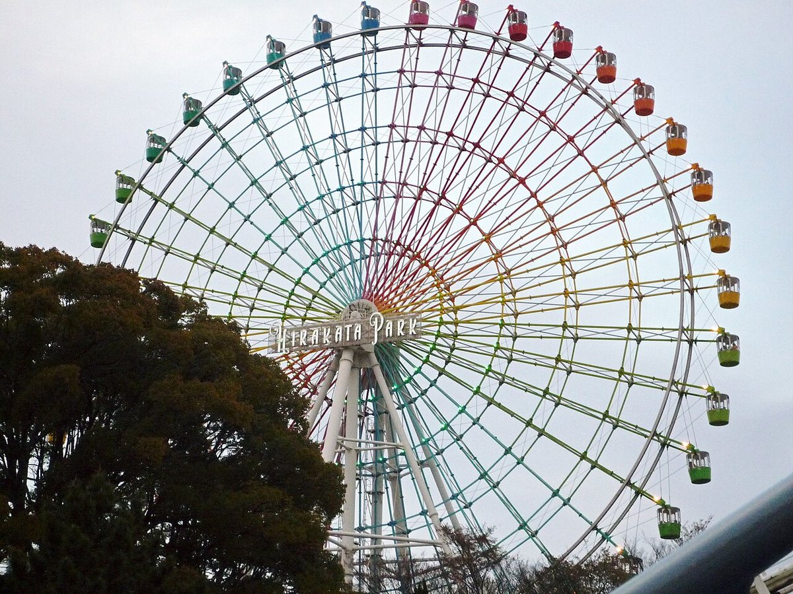
摩天輪「スカイウォーカー」Japan Maik, CC BY-SA 3.0, https://commons.wikimedia.org/wiki/File:Hirakata_Park.jpg 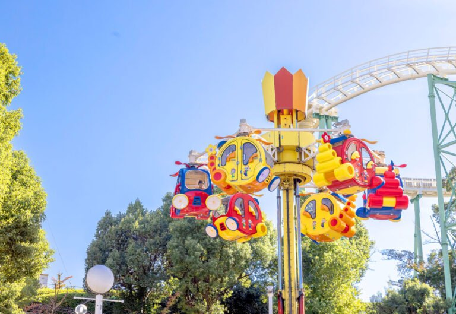
幼兒也能搭的旋轉直升機官網：ひらかたパーク https://www.hirakatapark.co.jp/attractions/ 更多說明
京阪電車經營的老牌遊樂園，暱稱「ひらパー」，已有百年以上歷史，是日本現存最古老的遊樂園之一。園內有木造雲霄飛車、高約 80 m 的摩天輪，也有幼兒能搭的小火車、旋轉直升機等二十多種設施，大人小孩各有得玩。冬天週末和假日傍晚起有「光之遊園地」燈飾，可以一路玩到晚上。
- 木造雲霄飛車「エルフ」、紅色雲霄飛車「レッドファルコン」
- 摩天輪「スカイウォーカー」：頂端約 80 m，晚上可以看大阪方向的夜景
- 幼兒設施：くるくるヘリコプター、ころっとろっこ小火車、まじかるジャンピン等（0 歲起可搭的有 14 種，要付費大人陪同）
- 冬季「光之遊園地」燈飾：週六日、假日傍晚點燈，憑入園券就能看
- 冬季（1–2 月）每週四休園，國定假日照開（例如 2/11 週四照常營業）；1 月另有 1/1、1/12–1/15、1/18–1/22 長休。官網營業行事曆按月公布，出發前再確認。
- 平日只開到 17:00；週六日、假日開到 20:00，傍晚起有「光之遊園地」燈飾，16:00 以後入園有較便宜的夜間票（入園＋一日券 網購 3,900／3,300／2,500 円）。
- 戶外設施下雨或強風時會停駛；冬天傍晚在摩天輪、雲霄飛車上很冷，要穿暖。
- 帶小孩、長輩：正面服務台有授乳室、泡奶熱水和尿布台；B 型嬰兒車租借 500 円（押金 1,500 円），輪椅免費（押金 1,500 円），都不能預約。
- 冬季戶外溜冰場「ウインターカーニバル」往年約 12 月中旬到 3 月上旬開放，入場和租鞋另外收費（2026–27 年的日期、票價待確認）。
- 京阪、Osaka Metro 等都有「ひらパーGo!Go!チケット」（來回車票＋入園券套票），可以比較是否划算。
16:40🚆枚方公園 → 出町柳（京阪電車）
- 16:40京阪準急 → 16:45 枚方市轉特急 → 17:18 出町柳
🚆 京阪本線 準急 → 枚方市轉特急 出町柳行｜枚方公園 → 出町柳｜約38分｜500 円｜IC可更多說明
往出町柳方向的準急坐 1 站到枚方市，換特急回出町柳。
- 路線
- 京阪本線 準急 → 枚方市轉特急 出町柳行
- 區間
- 枚方公園 → 出町柳
- 上車
- 枚方公園站 1 號線（往京都）
- 方向
- 出町柳（京都）方向
- 班次
- Yahoo!乗換案内（2027/1/31 週日）：16:40 → 16:43 枚方市 16:45 → 17:18 出町柳；約 10 分一班
- 票價
- 500 円
- IC 卡
- ICOCA 可刷
- 坐到終點出町柳
費用・其他走法・注意事項・來源
建議日期說明
2027-01-31（週日）：分組活動日，璞組去枚方遊樂園、長輩組去清水寺和祇園。週日是遊樂園的營業日機率較高，但仍要看官網行事曆。
推薦走法的交通費（成人單程合計）
| 京阪 出町柳 → 枚方公園 IC 卡可刷 | 500 円 |
| 京阪 枚方公園 → 出町柳 IC 卡可刷 | 500 円 |
| 合計 | 1,000 円 |
其他走法
- 遊樂園休園的話：同一條京阪線上的伏見稻荷大社（伏見稻荷站）、宇治（中書島轉宇治線）都能當備案
1/31（日）・京都
1/31 長輩組：清水寺 → 二年坂 → 祇園（計程車去、京阪回）
計程車直接到清水寺附近，一路下坡逛二年坂、八坂神社、祇園，再從祇園四條坐京阪 6 分鐘回出町柳
09:30🚕出町柳 → 清水寺（計程車）
- 09:30計程車 出町柳 → 清水寺（約 20 分；請司機開到「清水寺」最近能下車的地方）
🚕 計程車｜出町柳 → 清水寺｜約20分｜每台約 2,000–2,500 円｜IC可更多說明
清水寺周邊車道窄，計程車通常停在五條坂、茶わん坂上方的停車場一帶，再走 5–10 分鐘上坡到仁王門。跟司機說「清水寺までお願いします、なるべく近くで」。
- 路線
- 計程車（2 台）
- 區間
- 出町柳 → 清水寺
- 班次
- 不用預約；人多時可用 GO、Uber 等叫車 App 一次叫 2 台
- 票價
- 每台約 2,000–2,500 円（估算）
- IC 卡
- 多數計程車可刷信用卡、交通 IC 卡，上車前可先問
- 飯店／民宿可以請櫃台幫忙叫車
- 把目的地的日文名稱或地址給司機看最保險
10:00📍清水寺
- 10:00清水寺：仁王門、清水舞台、音羽瀑布（6:00 起開放）
朱紅色的仁王門DXR, CC BY-SA 4.0, https://commons.wikimedia.org/wiki/File:Nio-mon,_Kiyomizu-dera_Temple,_Kyoto,_West_view_20190416_1.jpg 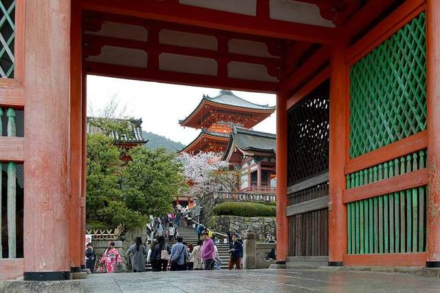
從仁王門望西門與三重塔DimiTalen, CC0, https://commons.wikimedia.org/wiki/File:View_of_the_Saimon_and_the_Three-storied_Pagoda_through_the_Niōmon,_Kiyomizu-dera,_Kyoto,_2016.jpg 更多說明
京都最有名的寺院，木造「清水舞台」懸在山壁上，冬天天氣晴朗時可以眺望京都市區。音羽瀑布三道泉水分別代表學業、戀愛、長壽。
- 寺內石階、坡道多，長輩慢慢走；冬天早上地面可能結霜濕滑
11:30📍三年坂・二年坂・八坂之塔（下坡散步）
- 11:30下坡逛三年坂 → 二年坂 → 八坂之塔
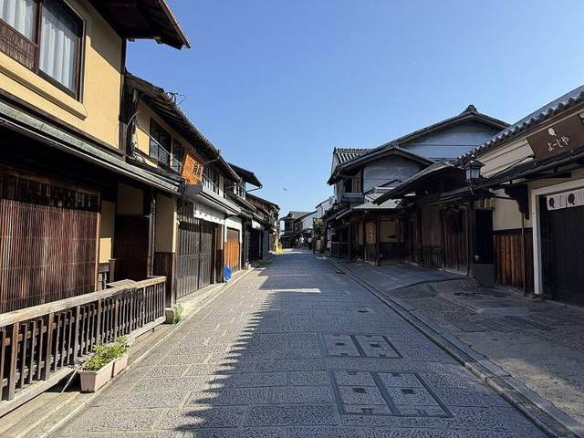
三年坂（產寧坂）石坂路Gatorfan252525, CC BY-SA 4.0, https://commons.wikimedia.org/wiki/File:Sannenzaka_in_July_2026.jpg 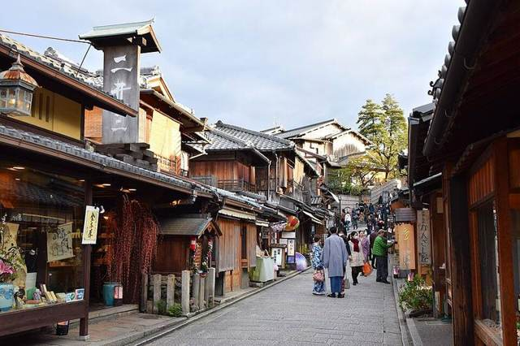
二年坂老街Raita Futo from Tokyo, Japan, CC BY 2.0, https://commons.wikimedia.org/wiki/File:Kyoto_-_Nineizaka_(51473588144).jpg 更多說明
從清水寺沿清水坂往下，轉進三年坂（產寧坂）、二年坂，石板路兩旁是老屋商店，終點看得到八坂之塔（法觀寺五重塔）。一路都是下坡和石階。
- 三年坂石階較陡，長輩可扶欄杆；不想走石階可以沿清水坂、五條坂的車道走
12:15🍽午餐：二年坂・八坂一帶
- 12:15午餐：二年坂、八坂一帶
更多說明
這一帶有湯豆腐、烏龍麵、蕎麥麵等老店，週日中午要排隊；早一點（11:45）入座比較快。
13:30📍八坂神社・祇園花見小路
- 13:30八坂神社 → 祇園花見小路散步
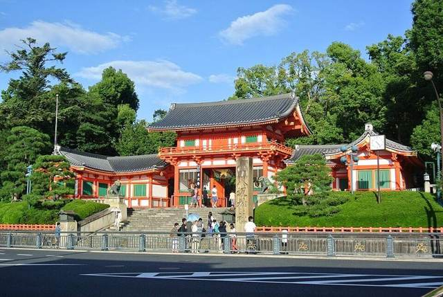
八坂神社朱紅色西樓門Suicasmo, CC BY-SA 4.0, https://commons.wikimedia.org/wiki/File:Nishi-rōmon,_Yasaka-jinja_20130923.jpg 更多說明
從八坂之塔往北走約 10 分到八坂神社（24 小時可參拜），再往西過四條通到花見小路，石板路兩旁是町家茶屋。
15:00🚆祇園四條 → 出町柳（京阪電車）
- 15:00京阪 祇園四條 → 15:06 出町柳（6 分、240 円）；累了改坐計程車
🚆 京阪本線 出町柳行｜祇園四条 → 出町柳｜約6分｜240 円｜IC可更多說明
從花見小路走到京阪祇園四條站（地下），坐往出町柳的電車 2 站 6 分鐘就到。
- 路線
- 京阪本線 出町柳行
- 區間
- 祇園四条 → 出町柳
- 上車
- 祇園四條站 1 號線（往出町柳）
- 方向
- 出町柳 方向（終點）
- 班次
- Yahoo!乗換案内（2027/1/31 週日）：15:00 → 15:06；約 5 分一班
- 票價
- 240 円（IC 卡）
- IC 卡
- ICOCA 可刷
- 坐到終點出町柳
費用・其他走法・注意事項・來源
建議日期說明
2027-01-31（週日）：分組活動日。週日清水寺人多，上午早點到比較好走。
推薦走法的交通費（成人單程合計）
| 計程車 出町柳 → 清水寺（每台） 約 5 公里 | 約 2,000–2,500 円 |
| 京阪 祇園四條 → 出町柳 每人；IC 卡可刷 | 240 円 |
| 合計 | 約 2,500 円／台＋240 円／人 |
其他走法
- 走不動的話：八坂神社前的東大路通很好叫計程車，直接回出町柳約 15 分
2/1（一）・京都
2/1 鴨川漫遊：鴨川三角洲・跳烏龜石・下鴨神社
住處就在出町柳附近，走路就到鴨川三角洲；順遊糺之森、下鴨神社和出町桝形商店街
10:00📍鴨川三角洲（鴨川デルタ）
- 10:00走到鴨川三角洲（出町柳站旁）
- 10:00鴨川三角洲：跳烏龜石、餵鳥要注意（老鷹會搶食物）
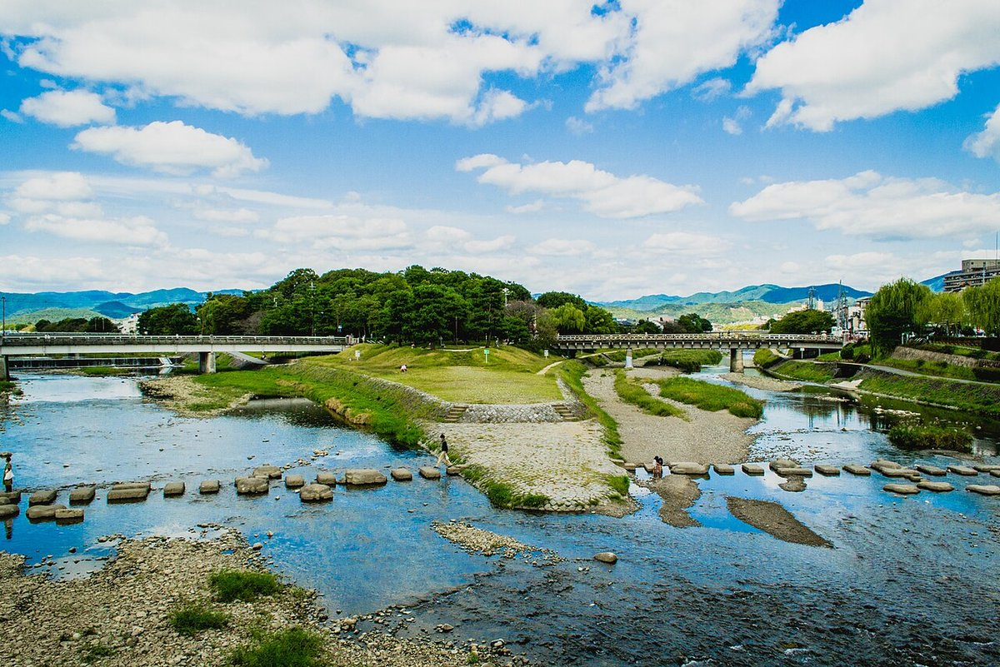
賀茂川與高野川匯流處的三角洲sayo ts, CC0, https://commons.wikimedia.org/wiki/File:鴨川デルタ1.jpg 烏龜造型的跳石Hajime NAKANO, CC BY 2.0, https://commons.wikimedia.org/wiki/File:鴨川デルタの飛び石.jpg 更多說明
賀茂川和高野川在出町柳匯流成鴨川，兩河之間的三角形沙洲就是京都人常說的「鴨川三角洲」，屬於京都府立鴨川公園，是當地學生和親子野餐、散步的地方。三角洲前端的河面鋪了一排排踏石（飛び石），其中有烏龜、千鳥和船形狀的石塊，小朋友最愛一顆顆跳過河。往北走就是下鴨神社的糺之森，可以一起逛。
- 跳石（飛び石）：橫越賀茂川、高野川和匯流後鴨川的踏石，有烏龜、千鳥、船造型
- 三角洲尖端的草地和松樹，可以遠眺大文字山和北山
- 往北步行約 10–15 分到世界遺產下鴨神社（糺之森）；西側有出町桝形商店街和排隊名店「出町ふたば」豆餅
- 踏石之間大約一步寬，表面可能潮濕長青苔；小小孩一定要大人牽著，不方便跳的長輩可以走旁邊的賀茂大橋、出町橋，在橋上看就好。
- 下雨後或水位高時，踏石會被淹沒、水流變急，不要勉強跳；冬天河邊風大很冷，早上石頭可能結霜。
- 河岸沒有遮蔽處也沒有商店，先在車站或商店街上好廁所、買好飲料再過來。
- 京阪・叡電出町柳站出來走 2 分就到；地下鐵最近的是烏丸線今出川站，沿今出川通往東走約 20 分，或搭市巴士 201／203 號到「河原町今出川」再走約 3 分。
10:45📍糺之森・下鴨神社
- 10:45往北走進糺之森，約 10 分到下鴨神社
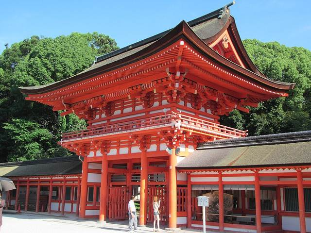
朱紅色的樓門Nekosuki, CC BY-SA 4.0, https://commons.wikimedia.org/wiki/File:Shimogamo-Jingya_National_Treasure_World_heritage_Kyoto_国宝・世界遺産_下鴨神社_京都18.JPG 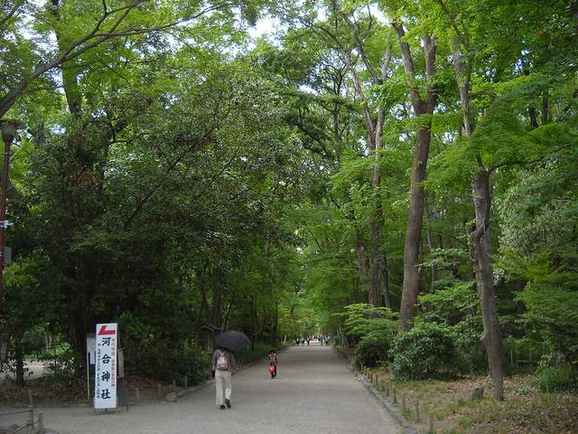
糺之森的參道與林蔭Cun Cun, CC BY-SA 4.0, https://commons.wikimedia.org/wiki/File:Shimogamo_Forest_(Tadasu_no_Mori).jpg 更多說明
三角洲北側就是原始林「糺之森」，沿參道走約 10 分到下鴨神社（世界遺產），朱紅樓門很好拍。
11:45🍽午餐：出町桝形商店街
- 11:45走回出町柳，出町桝形商店街吃午餐
- 13:00下午自由活動或回民宿休息
更多說明
出町柳站西側過出町橋就是出町桝形商店街，有定食、拉麵、麵包店；附近的「出町ふたば」名代豆餅很有名，常大排長龍（公休日待確認）。
費用・其他走法・注意事項・來源
建議日期說明
2027-02-01（週一）：輕鬆的一天，給前兩天累了的人休息。
推薦走法的交通費（成人單程合計）
| 全程步行 住處在出町柳附近；住得遠的話坐京阪到出町柳 | 0 円 |
| 合計 | 0 円 |
其他走法
- 住得離出町柳較遠：坐京阪到終點出町柳站，5 號出口出來就是鴨川三角洲
- 想多走一點：沿鴨川往南散步到三條、四條（約 40 分），再坐京阪回出町柳
2/2（二）・移動日
2/2 換宿：京都 → 西九條寄放行李 → 海遊館 → 大阪民宿
計程車到京都站、JR 到西九條放行李，下午逛海遊館，傍晚回西九條附近的民宿入住
10:00🚕出町柳 → JR 京都站（計程車）
- 10:00京都民宿退房，叫 2 台計程車到 JR 京都站（約 20 分）
🚕 計程車｜出町柳 → JR 京都站｜約20分｜每台約 2,500–3,000 円｜IC可更多說明
帶著大行李，坐計程車最省事。跟司機說「JR 京都駅、中央口」。
- 路線
- 計程車（2 台）
- 區間
- 出町柳 → JR 京都站
- 班次
- 不用預約；人多時可用 GO、Uber 等叫車 App 一次叫 2 台
- 票價
- 每台約 2,500–3,000 円（估算）
- IC 卡
- 多數計程車可刷信用卡、交通 IC 卡，上車前可先問
- 飯店／民宿可以請櫃台幫忙叫車
- 把目的地的日文名稱或地址給司機看最保險
10:30🚆JR 京都 → 大阪 → 西九條（新快速＋環狀線）
- 10:30JR 京都線新快速 姬路行 → 10:58 大阪
- 11:04大阪站換 JR 大阪環狀線（內回り）→ 11:10 西九條
🚆 JR 京都線 新快速 → 大阪站轉 JR 大阪環狀線 內回り｜京都 → 西九条｜約40分｜840 円｜IC可更多說明
京都站坐 JR 京都線「新快速」往姬路方向到大阪站（28 分），在大阪站換環狀線「內回り」（往西九條・弁天町）坐 3 站到西九條。
- 路線
- JR 京都線 新快速 → 大阪站轉 JR 大阪環狀線 內回り
- 區間
- 京都 → 西九条
- 上車
- 京都站 5 號線（以看板為準）；大阪站 1 號線（環狀線內回り）
- 方向
- 大阪・神戶方向 → 環狀線 西九條・弁天町方面
- 班次
- Yahoo!乗換案内（2027/2/2 週二）：10:30 → 10:58 大阪 11:04 → 11:10 西九條；新快速約 15 分一班
- 票價
- 840 円（IC 卡）
- IC 卡
- ICOCA 可刷
- 新快速 9 號車是付費座位「Aシート」，不要坐錯
- 大件行李放在座位後方或抱著，尖峰時段避開門口
11:20📍西九條寄放行李
- 11:20寄放行李：大阪民宿（先問能不能提早放）或西九條站置物櫃
- 11:45午餐：西九條一帶
更多說明
先問大阪民宿能不能提早寄放行李（很多民宿可以先放門口或指定地點）。不行的話用 JR 西九條站的置物櫃，大型櫃數量有限，7 人行李可能要分幾個櫃子。
12:45🚆西九條 → 大阪港（海遊館）
- 12:45西九條 → 大阪港（JR 到弁天町轉地鐵中央線，約 16 分）或計程車（約 15 分）
🚆 JR 大阪環狀線 → 弁天町轉 Osaka Metro 中央線｜西九条 → 大阪港｜約16分｜390 円｜IC可更多說明
JR 環狀線坐 1 站到弁天町，換地鐵中央線坐 2 站到大阪港，1 號出口走約 5 分到海遊館。或在西九條叫 2 台計程車（約 15 分）。
- 路線
- JR 大阪環狀線 → 弁天町轉 Osaka Metro 中央線
- 區間
- 西九条 → 大阪港
- 上車
- 西九條站 JR 環狀線（往弁天町）
- 方向
- 弁天町 → 中央線 夢洲方向
- 班次
- Yahoo!乗換案内（2027/2/2 週二）：13:03 → 13:05 弁天町 13:14 → 13:19 大阪港
- 票價
- 390 円（IC 卡）
- IC 卡
- ICOCA 可刷
- 有 IC 卡：直接刷，轉車不用出站買票
13:15📍海遊館
- 13:15海遊館（大致 10:00–20:00）
海遊館外觀與鯨鯊壁畫Tokumeigakarinoaoshima, CC BY-SA 4.0, https://commons.wikimedia.org/wiki/File:Osaka_Aquarium_Kaiyukan.jpg 瀑布邊的小爪水獺BradBeattie at English Wikipedia, CC BY-SA 3.0, https://commons.wikimedia.org/wiki/File:Kissing_otters.jpg 更多說明
世界最大級的水族館之一，從 8 樓沿著螺旋坡道往下走，中央大水槽有鯨鯊。全程室內，冬天也舒服，坡道緩，推嬰兒車、長輩都好走。
17:05🚇大阪港 → 西九條，入住大阪民宿
- 17:05大阪港 → 西九條（約 13 分）
- 17:30取行李，入住西九條附近的大阪民宿
🚇 Osaka Metro 中央線 → 弁天町轉 JR 環狀線｜大阪港 → 西九条｜約13分｜390 円｜IC可更多說明
原路回西九條取行李，走到民宿入住。行李多的話直接從海遊館叫計程車回西九條（約 15 分）。
- 路線
- Osaka Metro 中央線 → 弁天町轉 JR 環狀線
- 區間
- 大阪港 → 西九条
- 上車
- 大阪港站 1 號線（往本町方向）
- 方向
- 本町方向 → 弁天町轉 JR 環狀線 西九條方面
- 班次
- Yahoo!乗換案内（2027/2/2 週二）：17:05 → 17:10 弁天町 17:16 → 17:18 西九條
- 票價
- 390 円（IC 卡）
- IC 卡
- ICOCA 可刷
- 弁天町轉 JR 要出地鐵站再進 JR 站
費用・其他走法・注意事項・來源
建議日期說明
2027-02-02（週二）：平日的海遊館人比週末少。
推薦走法的交通費（成人單程合計）
| 計程車 出町柳 → JR 京都站（每台） 約 6 公里；2 台 | 約 2,500–3,000 円 |
| JR 京都 → 西九條（新快速＋環狀線） 每人；IC 卡可刷 | 840 円 |
| JR＋地鐵 西九條 → 大阪港（海遊館） 每人；或坐計程車約 15 分 | 390 円 |
| 地鐵＋JR 大阪港 → 西九條 每人 | 390 円 |
| 合計 | 840＋780 円／人＋計程車 |
其他走法
- 全程計程車：京都民宿 → 大阪民宿約 50 公里，2 台計程車每台約 15,000–18,000 円（估算），或預約 10 人座車
- 想避開轉車：京都站坐 JR 到大阪站後直接叫計程車到西九條（約 10 分）
2/3（三）・住大阪
2/3 璞：日本環球影城 USJ
從西九條坐 JR ゆめ咲線 2 站 6 分鐘就到，可以一早排入園
08:02🚆西九條 → ユニバーサルシティ（JR ゆめ咲線）
- 08:00走到 JR 西九條站
- 08:02JR ゆめ咲線 桜島行 → 08:08 ユニバーサルシティ
🚆 JR ゆめ咲線｜西九条 → ユニバーサルシティ｜約6分｜180 円｜IC可更多說明
西九條站坐 JR ゆめ咲線（桜島線）往桜島方向 2 站。早上很多列車從西九條發車，也有從大阪站直通的「ユニバーサルシティ行」。
- 路線
- JR ゆめ咲線（桜島線）
- 區間
- 西九条 → ユニバーサルシティ
- 上車
- 西九條站 ゆめ咲線月台（往桜島）
- 方向
- 桜島 方向
- 班次
- Yahoo!乗換案内（2027/2/3 週三）：08:02 → 08:08；早上約 5–10 分一班
- 票價
- 180 円（IC 卡）
- IC 卡
- ICOCA 可刷
- 有 IC 卡：直接刷
08:15📍日本環球影城 USJ
- 08:15USJ 大門排隊（開園時間依日期，以官網日曆為準）
- 20:00離園，走回ユニバーサルシティ站
USJ入口拱門Rebirth10, CC0, https://commons.wikimedia.org/wiki/File:USJ_2018.09-24.jpg 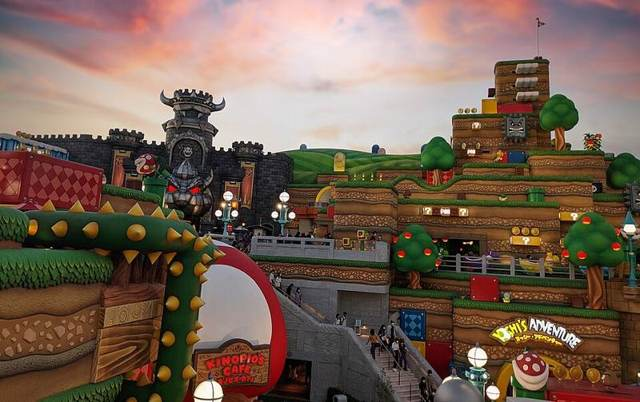
超級任天堂世界Japanexperterna.se, CC BY-SA 2.0, https://commons.wikimedia.org/wiki/File:Super_Nintendo_World_Theme_Park_at_USJ_Osaka_Evening_Sky.jpg 更多說明
超級任天堂世界、哈利波特魔法世界、小小兵樂園都很適合小孩。冬天園區風大，帶手套、毛帽。
- 門票、快速通關都先在官網買；任天堂世界人多時要「入場整理券」，入園後馬上用官方 App 抽
- 開園時間依日期變動，前一天再看官網日曆
20:06🚆ユニバーサルシティ → 西九條（JR ゆめ咲線）
- 20:06JR ゆめ咲線 西九條行 → 20:12 西九條
🚆 JR ゆめ咲線 西九條行｜ユニバーサルシティ → 西九条｜約6分｜180 円｜IC可更多說明
閉園前後車站很擠，可以先在 CityWalk 吃晚餐再走。
- 路線
- JR ゆめ咲線 西九條行
- 區間
- ユニバーサルシティ → 西九条
- 上車
- ユニバーサルシティ站 1 號線
- 方向
- 西九條・大阪 方向
- 班次
- Yahoo!乗換案内（2027/2/3 週三）：20:06 → 20:12
- 票價
- 180 円（IC 卡）
- IC 卡
- ICOCA 可刷
- 有 IC 卡：直接刷
費用・其他走法・注意事項・來源
建議日期說明
2027-02-03（週三）：平日人比週末少，但 2 月初仍有學生團；任天堂世界要看當天整理券或購買保證入場的快速通關。哥這天還沒安排，可以參考「其他走法」。
推薦走法的交通費（成人單程合計）
| JR 西九條 → ユニバーサルシティ IC 卡 | 180 円 |
| JR ユニバーサルシティ → 西九條 IC 卡 | 180 円 |
| 合計 | 360 円 |
其他走法
- 哥這天還沒安排，從西九條出發的點子：梅田藍天大廈空中庭園（JR 到大阪站，走約 10 分）、天神橋筋商店街（日本最長商店街）、黑門市場＋道頓堀（阪神なんば線直達大阪難波），都在景點介紹頁裡
2/4（四）・住大阪
2/4 奈良一日遊：奈良公園餵鹿・東大寺大佛
西九條坐阪神なんば線快速急行，不用轉車 50 分鐘直達近鐵奈良
09:00🚆西九條 → 近鐵奈良（阪神なんば線直通）
- 09:00阪神なんば線快速急行 近鐵奈良行 → 09:50 近鐵奈良（不用轉車）
🚆 阪神なんば線 快速急行 近鐵奈良行｜西九条 → 近鉄奈良｜約50分｜900 円｜IC可更多說明
西九條站坐阪神なんば線「快速急行 近鐵奈良行」，經大阪難波直接開進近鐵奈良線，不用轉車。坐到終點近鐵奈良。
- 路線
- 阪神なんば線 快速急行 近鐵奈良行（直通近鐵奈良線）
- 區間
- 西九条 → 近鉄奈良
- 上車
- 西九條站 阪神なんば線 1 號線（往大阪難波・奈良）
- 方向
- 大阪難波・奈良 方向
- 班次
- Yahoo!乗換案内（2027/2/4 週四）：09:00 → 09:50；約 20 分一班
- 票價
- 900 円（IC 卡）
- IC 卡
- ICOCA 可刷
- 有 IC 卡：直接刷
- 坐到終點近鐵奈良，看清楚是「快速急行 近鉄奈良」
10:00📍奈良公園餵鹿
- 10:00奈良公園：買鹿仙貝餵鹿
奈良公園草地上的梅花鹿nobu3withfoxy from Iga,Mie, Japan, CC BY 2.0, https://commons.wikimedia.org/wiki/File:The_grasslands_(52125747849).jpg 更多說明
近鐵奈良站 2 號出口往東走 5 分鐘就有很多鹿。鹿仙貝在公園裡的攤位買（1 疊 200 円），鹿會鞠躬討食。
- 仙貝拿出來就會被圍住，小孩一次拿幾片就好，餵完攤開雙手讓鹿知道沒了
- 鹿會咬紙袋、地圖，不要把食物、紙張拿在手上
- 冬天母鹿多、比較溫和，但還是不要從後面摸
10:45📍東大寺・大佛殿
- 10:45東大寺：南大門 → 大佛殿
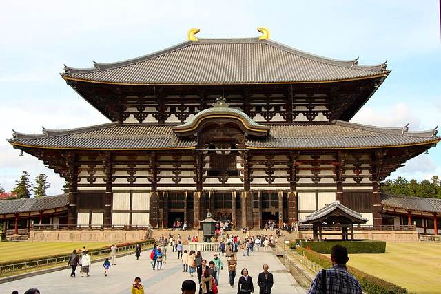
大佛殿正面Kanchi1979, CC BY-SA 4.0, https://commons.wikimedia.org/wiki/File:JP-Nara-Tōdai-Ji-Great-Buddha-Hall.JPG 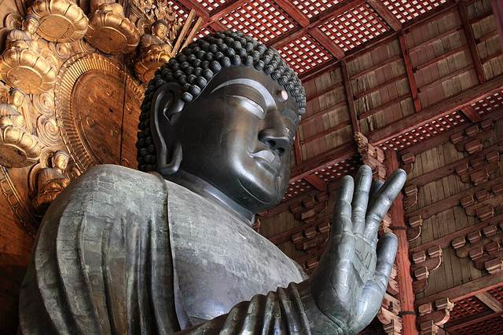
盧舍那大佛（奈良大佛）TANAKA Juuyoh (田中十洋), CC BY 2.0, https://commons.wikimedia.org/wiki/File:Tōdai-ji_Temple,_Nara;_November_2010_(07).jpg 更多說明
世界最大的木造建築之一，裡面是高約 15 公尺的盧舍那大佛。大佛殿後方的柱子有個洞，據說鑽過去可以消災，小孩最愛排。
- 大佛殿冬季開放時間約 8:00–17:00（待確認）
12:15🍽午餐：東向商店街・三條通
- 12:15午餐：東向商店街、三條通一帶
- 13:30體力好的話走到春日大社（約 25 分）；不然在公園休息
- 15:45走回近鐵奈良站
更多說明
近鐵奈良站旁的東向商店街和三條通有柿葉壽司、釜飯、烏龍麵等。
16:04🚆近鐵奈良 → 西九條
- 16:04近鐵快速急行 → 16:56 西九條
🚆 近鐵奈良線 快速急行 神戶三宮行｜近鉄奈良 → 西九条｜約52分｜900 円｜IC可更多說明
坐近鐵奈良線「快速急行 神戶三宮行」，經大阪難波直通阪神なんば線，不用轉車到西九條。
- 路線
- 近鐵奈良線 快速急行 神戶三宮行（直通阪神なんば線）
- 區間
- 近鉄奈良 → 西九条
- 上車
- 近鐵奈良站（起點站）
- 方向
- 大阪難波・神戶三宮 方向
- 班次
- Yahoo!乗換案内（2027/2/4 週四）：16:04 → 16:56；約 20 分一班
- 票價
- 900 円（IC 卡）
- IC 卡
- ICOCA 可刷
- 坐往「神戸三宮」的快速急行；往「大阪難波」的要在難波轉車
費用・其他走法・注意事項・來源
建議日期說明
2027-02-04（週四）：平日上午遊客較少，鹿也比較有精神。
推薦走法的交通費（成人單程合計）
| 阪神・近鐵 西九條 → 近鐵奈良 IC 卡；不用轉車 | 900 円 |
| 近鐵・阪神 近鐵奈良 → 西九條 IC 卡 | 900 円 |
| 合計 | 1,800 円 |
其他走法
- 長輩走不動：餵鹿＋東大寺就回程，春日大社跳過；東大寺到近鐵奈良站約 20 分，也可以在東大寺前叫計程車
2/5（五）・住大阪
2/5 璞：大阪兒童樂園（キッズプラザ大阪・大阪兒童博物館）
西九條坐 JR 環狀線 3 站到天滿，走 4 分鐘就到
09:34🚆西九條 → 天滿（JR 環狀線）
- 09:34JR 大和路快速（環狀線）→ 09:43 天滿，走約 4 分
🚆 JR 大阪環狀線 外回り｜西九条 → 天満｜約9分｜180 円｜IC可更多說明
西九條站坐 JR 環狀線外回り（往大阪・京橋方向），3 站到天滿。大和路快速、關空快速在環狀線上也是各站停車。
- 路線
- JR 大阪環狀線 外回り（大阪・京橋方面）
- 區間
- 西九条 → 天満
- 上車
- 西九條站 1 號線（往大阪・京橋）
- 方向
- 大阪・京橋 方向
- 班次
- Yahoo!乗換案内（2027/2/5 週五）：09:34 → 09:43；約 5 分一班
- 票價
- 180 円（IC 卡）
- IC 卡
- ICOCA 可刷
- 有 IC 卡：直接刷
09:50📍大阪兒童樂園（キッズプラザ大阪・大阪兒童博物館）
- 09:50大阪兒童樂園（キッズプラザ大阪・大阪兒童博物館）（9:30–17:00（最後入館 16:15）；每月第 2、3 個週一休館（遇國定假日改隔天），年底年初 12/28–1/2 休館）
- 15:30JR 天滿 → 西九條（約 10 分）
百水設計的「兒童街道」官網：キッズプラザ大阪 https://www.kidsplaza.or.jp/ 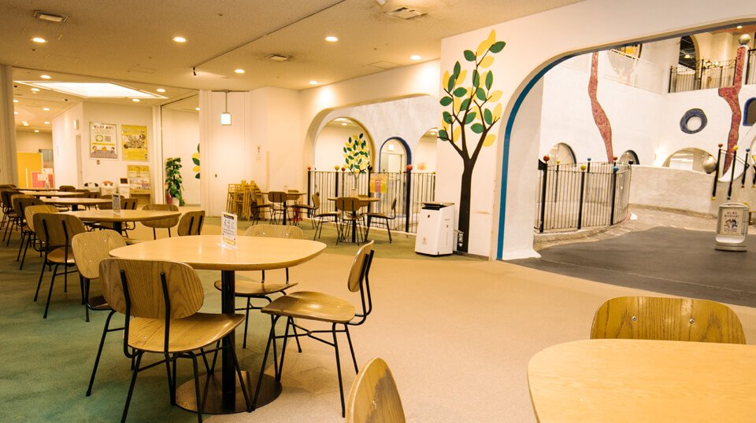
可以吃自備便當的休息區官網：キッズプラザ大阪 https://www.kidsplaza.or.jp/about/ 更多說明
1997 年開館、日本第一座正式的「兒童博物館」，中文旅遊資訊常稱「大阪兒童樂園」（大阪觀光局譯作「大阪兒童廣場」）。館內有科學、文化展示和各種動手做的工作坊，最有名的是奧地利藝術家百水（Hundertwasser）設計的「兒童街道」，可以鑽洞、溜滑梯、爬上爬下。全館都在室內，冬天或下雨也能放電，附近有扇町公園。
- 百水設計的「こどもの街（兒童街道）」：彎曲的塔樓、滑梯、隧道和繩網
- 4 樓「あそぼう階」以兒童街道為中心，有郵差、店員等生活職業體驗和幼兒專區，最適合學齡前小孩
- 5 樓科學與文化展示、3 樓手作工作坊（部分活動另收材料費，現金付）
- 館內有休息區可吃自備便當，授乳室、調乳熱水、換尿布台和多目的廁所齊全
- 2027 年 1–2 月休館日：1/1、1/2、1/12（二）、1/18（一）、2/8（一）、2/15（一）。
- 65 歲以上的長輩出示護照等年齡證明，門票只要 700 円；平日 14:00 以後入館用「虹からチケット」更便宜（但平日管狀滑梯只開到 14:00）。
- 平日上午常有學校、幼稚園團體，比較擠；週末下午或平日午後比較從容。當天憑票可從 3 樓出口再入館。
- 館內沒有餐廳，只有飲料、點心販賣機；可自帶便當在 4 樓多目的室或圓桌吃，或到附近天神橋筋商店街吃。館內沒有微波爐和熱水壺。
- 1 樓服務台免費借嬰兒車（2 歲以下）和輪椅；投幣式置物櫃退幣免費；行李箱可鎖在 5 樓的鎖桿。
費用・其他走法・注意事項・來源
建議日期說明
2027-02-05（週五）：分組活動日，璞去兒童樂園、哥去大阪城公園，兩邊都在 JR 環狀線上。
推薦走法的交通費（成人單程合計）
| JR 西九條 → 天滿 IC 卡 | 180 円 |
| JR 天滿 → 西九條 IC 卡 | 180 円 |
| 合計 | 360 円 |
2/5（五）・住大阪
2/5 哥：大阪城公園・天守閣・梅林
西九條坐 JR 環狀線 16 分鐘到大阪城公園站，2 月初梅林的早開品種開始開花
09:34🚆西九條 → 大阪城公園（JR 環狀線）
- 09:34JR 環狀線 → 09:50 大阪城公園站
🚆 JR 大阪環狀線 外回り｜西九条 → 大阪城公園｜約16分｜200 円｜IC可更多說明
西九條坐 JR 環狀線外回り，經大阪、天滿、京橋，第 7 站大阪城公園。
- 路線
- JR 大阪環狀線 外回り（大阪・京橋方面）
- 區間
- 西九条 → 大阪城公園
- 上車
- 西九條站 1 號線（往大阪・京橋）
- 方向
- 大阪・京橋 方向
- 班次
- Yahoo!乗換案内（2027/2/5 週五）：09:34 → 09:50；約 5 分一班
- 票價
- 200 円（IC 卡）
- IC 卡
- ICOCA 可刷
- 有 IC 卡：直接刷
10:00📍大阪城公園・天守閣
- 10:00大阪城梅林（青屋門附近，早開品種）
- 10:45大阪城天守閣：8 樓展望台看市區
- 12:15午餐：JO-TERRACE OSAKA（大阪城公園站旁）
- 13:30西之丸庭園或公園散步，下午自由
天守閣與秋季紅葉Mc681, CC BY-SA 4.0, https://commons.wikimedia.org/wiki/File:Osaka_Castle_Keep_Tower_in_201411_005.JPG 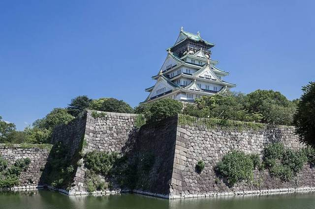
石垣、內護城河與天守閣Kakidai, CC BY-SA 4.0, https://commons.wikimedia.org/wiki/File:2018_Osaka_Castle_03.jpg 更多說明
大阪城公園是市中心的大公園，梅林約有 100 個品種、1,200 多棵梅樹。天守閣內是歷史博物館，8 樓展望台可以俯瞰大阪。
- 天守閣開放時間依季節調整，以官網為準
- 從大阪城公園站走到天守閣約 20 分，坡道和石階不少
費用・其他走法・注意事項・來源
建議日期說明
2027-02-05（週五）：分組活動日。大阪城梅林通常 1 月下旬早開品種開花、2 月中下旬到 3 月上旬最盛。
推薦走法的交通費（成人單程合計）
| JR 西九條 → 大阪城公園 IC 卡 | 200 円 |
| JR 大阪城公園 → 西九條 IC 卡 | 200 円 |
| 合計 | 400 円 |
2/6（六）・移動日
2/6 回台灣：西九條 → 關西機場
大阪退房後坐接送車或 JR 到關西機場；航班時間確定後再調整
13:30🚆西九條 → 關西機場
- 13:30接送車出發（約 60–70 分）；或坐 JR（約 55–70 分）
- 14:45抵達關西機場，報到、托運
- 15:30出境審查、海關退稅確認
- 17:00起飛（以此為例）
🚆 JR 環狀線 → 天王寺轉 特急はるか｜西九条 → 関西空港｜約54分｜1,940 円｜IC可更多說明
7 人帶大行李，最省事是像抵達日一樣預約 10 人座接送車（約 60–70 分）。坐電車的話：JR 環狀線到天王寺轉特急はるか（約 54 分，1,940 円），或環狀線到新今宮轉南海空港急行（約 72 分，1,170 円）。
- 路線
- JR 環狀線 → 天王寺轉 特急はるか（自由席）
- 區間
- 西九条 → 関西空港
- 上車
- 西九條站 4 號線（往弁天町・天王寺）
- 方向
- 天王寺 → 關西空港
- 班次
- Yahoo!乗換案内（2027/2/6 週六）：15:03 → 15:13 天王寺 15:17 → 15:50 關西空港（時間依航班調整）
- 票價
- 1,940 円（車資 1,180＋自由席特急券 760）
- IC 卡
- 車資可刷 IC 卡，特急券要另外買
- はるか特急券在 JR 售票機或綠色窗口買
- 大件行李放車廂兩端的行李區
費用・其他走法・注意事項・來源
建議日期說明
2027-02-06（週六）回國日。航班時間還沒提供，以下用「17:00 起飛」舉例；國際線建議起飛前 2 小時到機場。
推薦走法的交通費（成人單程合計）
| 接送車 西九條 → 關西機場 7 人＋行李建議訂 10 人座 | 待預約 |
| 或 JR 西九條 → 天王寺 → 關西機場（はるか自由席） 每人；不想坐特急可改南海，1,170 円 | 1,940 円 |
| 合計 | 依選擇 |
其他走法
- 機場接送車沒訂：西九條叫 2 台計程車到關西機場每台約 18,000–22,000 円（估算，約 50 公里，含高速費另計），7 人分攤和接送車差不多
要留意
- 航班時間確定後，請告訴我，我再把時間軸改成實際時間